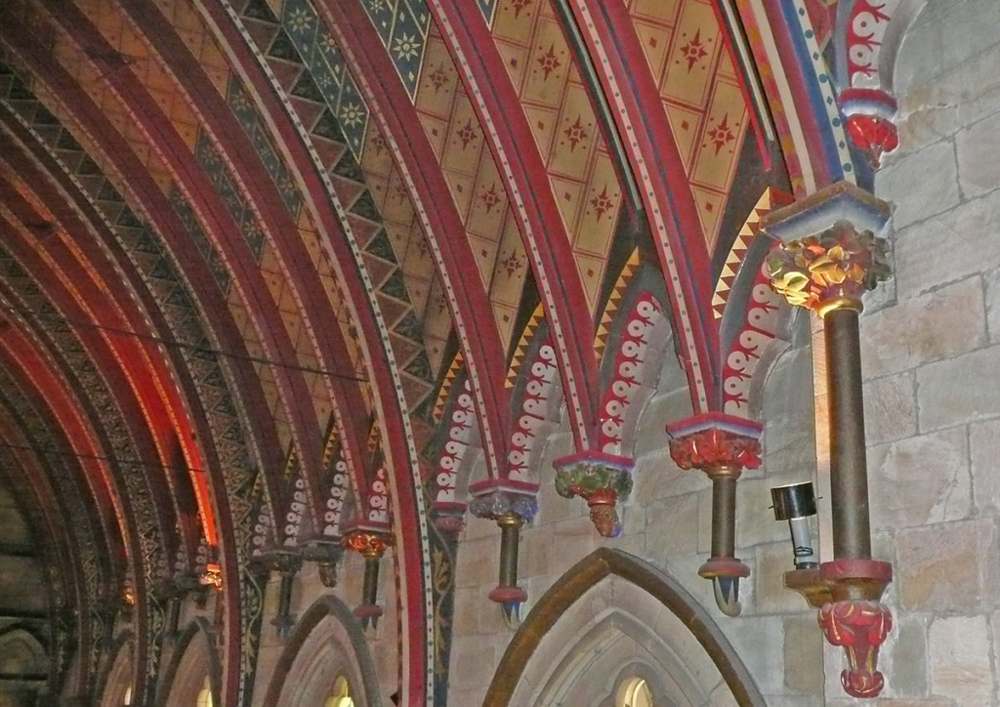

New openly licensed ebook on NZ arts and crafts design
By Elizabeth Heritage
As a member of the New Zealand book trade, as well as being the Communications Lead at Creative Commons Aotearoa New Zealand, I’m always on the look-out for stories of Kiwis licensing their books under Creative Commons. Recently I caught up with Ann Calhoun, whose ebook Arts & Crafts Design: "like yet not like" nature: sources for a New Zealand story is licensed under a Creative Commons Attribution-NonCommercial-NoDerivatives (CC BY-NC-ND) 4.0 New Zealand licence.
Ann Calhoun is an art historian and researcher. Initially working in the patent world, she retrained as an art historian, then worked at the Queen Elizabeth II Arts Council, the National Art Gallery, the City Gallery (Wellington) and did contract work for Te Papa. She published The Arts & Crafts movement in New Zealand (AUP 2000) and curated Simplicity &
The blurb to her book states: “Over decades of privileged study of the Arts & Crafts in New Zealand, I became aware of a body of beautiful designs on paper. Almost all were by women, almost all had never been realised on fabric or wallpaper or on any other media or end product, and most had never been exhibited or published. The purpose of the present study is to right this wrong.”
 Ebook cover: Reverend Doris Tutill, Wisteria design suitable for embroidery, 1933, watercolour; Macmillan Brown Library, University of Canterbury, Christchurch, New Zealand (photo: Karl Valpy, Christchurch). Licensed CC BY-NC-ND
Ebook cover: Reverend Doris Tutill, Wisteria design suitable for embroidery, 1933, watercolour; Macmillan Brown Library, University of Canterbury, Christchurch, New Zealand (photo: Karl Valpy, Christchurch). Licensed CC BY-NC-ND
Ann’s book is available as an ebook only. She says: “The ebook is 350 pages and over 300 images. Publication costs for a regular book would have been prohibitive for a decent print run. I wanted New Zealanders to recognise that their cultural history included an Arts & Crafts movement. In today’s visual culture an illustrated book has understandably more attractions than text alone.”
Ann chose to make her ebook available for free download under a CC BY-NC-ND licence so as many people as possible could read it. She says: “Licensing my book under Creative Commons was a ‘no-brainer’. I come from a background in patents and art history, and questions of copyright have always been of interest. CC means that younger and older audiences – anyone interested in design or the Arts & Crafts or almost anything! - can have easy access to the CC ebook. In every way, CC was an exciting option.”
 James Johnstone (head of Design and Crafts at the Canterbury College School of Art from 1926 to 1958), “Table Lamp”, oxidised silver on copper, c1932; Private collection (photo: J. Thomson, Christchurch). Licensed CC BY-NC-ND
James Johnstone (head of Design and Crafts at the Canterbury College School of Art from 1926 to 1958), “Table Lamp”, oxidised silver on copper, c1932; Private collection (photo: J. Thomson, Christchurch). Licensed CC BY-NC-ND
Being able to publish such a highly illustrated book depended on Ann’s ability to access and reuse GLAM collections around the country. She says: “Using CC, I was aware of the generosity of so many people, in particular professional and amateur photographers. Researchers always depend on those they interview and I was always thrilled to visit. Libraries and public art collections were exceptional – the Alexander Turnbull Library supplied a significant number of images. Staff everywhere were wonderful and interested in the use of CC.
“And in my thanks I must include the designer Gray Hodgkinson, who with Rosemary Tonk make up DesignSpace. With such an exciting design and card flyer, I knew that readers could access the story by image and later refer to the text for a closer reading. An eminent New Zealand librarian commented on the quality of the images and pronounced himself a convert to digital books – and hopefully to Creative Commons. CC gives access where access may previously have been denied.”
 Canterbury Provincial Council Chamber, old Government Buildings, Christchurch, New Zealand, the ceiling arches continued down the walls by polished porphyry columns; stone corbels, carved by stonemason and craftsman William Brassington, support the painted beams. Licensed CC BY-NC-ND
{kind=link}
Elizabeth Heritage is the Communications Lead at Creative Commons Aotearoa New Zealand. She is also a freelancer in the publishing industry, with a particular interest in the ways in which the Kiwi arts and cultural sectors are changing in the face of the internet.
New Zealand Teachers, Copyright and Copyright Reform
BY ALEC DUNCAN
The copyright regime
Copyright is the recognition of the creator’s interest in benefiting from their work. In the first statutory regime for copyright—the Statute of Anne—its purpose was recorded as the “encouragement of learning...[and of] learned men to compose and write useful books”.[1] Copyright attaches to any original ‘work’.[2] A ‘work’ is any physical manifestation of the application of time, skill and judgment.
In practical terms, copyright exists in the following types of ‘work’: [3]
- Literary, dramatic, musical or artistic works;
- Sound recordings;
- Films;
- Communication works (sounds, visual images or other information broadcast to the public—e.g. the news); and
- Typographical arrangements of published editions.
A work is original if it is not commonplace. It does not need to be unique, but it cannot be substantially similar to any original. Though this standard is often determined on a case-by-case basis, it means that any derivative work can only use the original as inspiration, and cannot express ideas in the same way as the original.
The copyright owner has the exclusive right to:
- Copy;
- Distribute;
- Perform;
- Play;
- Show;
- Communicate; or
- Adapt the work
The copyright owner also has the right authorise any person to do any of the aforementioned acts.[4] Anyone who does any one of those acts without the permission of the copyright owner breaches copyright if that act is in relation to a whole or substantial part of the work.[5]
Implications for teachers and schools
Copyright raises two main educational issues: first, the use of copyrighted works in the learning process; and second, the use of works created by teachers themselves, but used subsequently by teachers at different schools. The Copyright Act clearly states what actions will breach copyright. [6] However, there are also many exceptions which apply to teachers and students, and it is less clear under what circumstances schools will be able to rely on those exceptions because their language is vague.
Let’s examine some of these exceptions. Teachers can make one copy of all or part of a work (excluding film or sound recordings): [7]
a) To prepare their lesson; or
b) To assist them in delivering the lesson
c) The copy is for the teacher’s use only
d) However, teachers may make multiple non-facsimile copies (e.g. copying out a poem by hand rather than photocopying or scanning).
The rules are more restrictive if teachers want to provide copies to students.[8] Teachers can copy:
a) Up to 3% of the work; or
b) Up to 3 pages of the work (whichever is greater); but
c) The amount copied cannot exceed 50% of the whole work (e.g. if the desired extract is 3 pages, only one and a half pages may be copied)
d) Teachers may not charge students for the copies.
However, the exceptions get even more specific regarding film and sound recordings. For films and soundtracks, teachers can copy that work: [9]
a) To prepare their lesson; or
b) To assist them in delivering the lesson
c) The lesson must be to instruct students on how to make such recordings—the recording must be used for its technical aspects, not for its substantive content
d) Students of such classes may also copy such works, before, during, or after such a class
Sound recordings may only be copied where the lesson is either a language lesson, or is delivered by correspondence.[10]
However, the rules regarding ‘performance’ works (e.g. dramatic or musical works, and film and TV works) are remarkably relaxed compared with the other rules. Teachers and students may perform literary, dramatic or musical works, or show films or other forms of broadcast works (e.g. radio): [11]
a) To other students and teachers of the same school (this often excludes parents);
b) The performance or showing must be for the purposes of instruction
Schools must store copyrighted material separately from other educational material and must identify the author and source.[12] Access can only be given those who can show (e.g. by logging-on) that they have permission to access to the copy.[13]
The Copyright Act provides a general ‘fair dealing’ exception limited to use for the purposes of criticism, review, reporting of current events, [14] and for research or private study.[15] This is most applicable to students. Students can copy a reasonable portion of works: ‘Reasonableness’ is often defined in terms of:
i) The purpose use (i.e. the ‘fair dealing’ purposes described above);
ii) The nature of the work (i.e. it is less fair to copy a work that required more skill to produce (e.g. a sculpture or painting));
iii) The effect copying the work will have on its value;
iv) The quantity of material copied and the proportion of the final work based on copied material; and
v) Whether the material could have been bought, and if so, at a reasonable price.
However, teachers cannot provide students with the copies unless they comply with the 3% or 3 page limit.
The foregoing exceptions apply only to the copying and communication or performance of works. Thus, these exceptions do not allow teachers to adapt the works to suit their own particular needs because there is no ‘fair dealing’ provision which includes adaptation.
Solving the issues
The Copyright Act allows owners to license (that is, give permission for) certain actions.[16] However, obtaining licences to use copyrighted materials often involves a significant investment in time and money. If a request for permission is denied, the statutory exceptions, noted above, apply.
However, schools might be more willing than other creators to license the adaptation and use of teaching resources. After all, there is mutual benefit from permitting the use of copyrighted work for education, and little corresponding financial benefit from publishing the resources.
The Creative Commons Licences are one tool that BOTs can use to make resources freely available to others who wish to use them. The licences notify users which actions the copyright holder allows others undertake, and what actions they may not.
A more creative option would be to encourage more independent research in learning. For example, having students research the material (within guidelines provided by the teacher) would avoid the rule that teachers cannot provide more than 3% or 3 pages of a work to their students. Any use of copyrighted material by students would fall under one or both of the fair dealing exceptions. Of course, this shift in teaching style would not be appropriate for all students or schools.
Reforming copyright
The education exceptions have remained largely untouched by incremental reform—little has been done to address the greater collaboration which the internet has allowed. There is a greater ability for teachers and students spread ideas and to adapt them to suit their own needs—but the copyright regime does not allow this without permission. In effect, derivative works must be created from the ground up because copyrighted works must, in effect, form only the kernel of a derivative.
The copyright regime’s purpose does not fit well with education. It is designed to incentivise the production of knowledge by protecting creators’ financial interests. However, if the creators do not benefit, then the underlying purpose of the regime is redundant. It is also arguable that there is a public interest in allowing teachers to adapt works because it allows for the dissemination and for adaptation of educational resources, resulting in better outcomes. Currently, the copyright regime stifles teachers’ creativity (and thus students’ learning) in the name of protecting a non-existent benefit.
In their report on the education exceptions under the Copyright Act 1968 (Cth), the Australian Law Reform Commission (ALRC) concluded that the confusing education exceptions should be replaced by a general ‘fair dealing’ exception.[17] Australia’s education exceptions are very similar to New Zealand’s and were criticised as “inflexible” and “impractical” and inconsistent in their application.[18] The ALRC noted the position in the USA and UK allows “minimal, non-commercial and fair” use, which does not displace the “sale and licensing of education materials”.[19]
However, the ALRC report did not deal with teacher-created content and was rejected by the Australian government. Thus, it seems that concrete reform for adaptive work for teacher-created content is far from becoming a reality any time soon.
Notes
[1] Statute of Anne 1710 8 Anne, c. 19, cl 1.
[2] Copyright Act 1994, s 14.
[3] Section 14(1).
[4] Section 16(1).
[5] Section 29.
[6] Ibid.
[7] Section 44.
[8] Section 44(3).
[9] Section 45(1).
[10] Section 45(3).
[11] Section 47.
[12] Section 44A(1).
[13] Section 44A(2)-(3).
[14] Section 42.
[15] Section 43.
[16] Section 16(1).
[17] Copyright and the Digital Economy [2013] ALRC 122 at 14.4.
[18] At 14.6.
[19] At 14.21-14.22.
GIF IT UP 2015
By Elizabeth Heritage
At Creative Commons Aotearoa New Zealand, we are proud this year to be sponsoring the prizes for NZ school students for GIF IT UP 2015, which will be judged by GIF and comic artist Toby Morris.
GIF IT UP is a fun challenge coordinated by DigitalNZ and the Digital Public Library of America, which calls for the best GIFs created from copyright-free or openly licensed heritage material. GIF-makers can use any content they find via digitalnz.org and dp.la, and other international search services europeana.eu and trove.nla.gov.au. This material must be licensed for reuse. For example, it must be:
- in the public domain,
- have a ‘no known copyright restrictions’ statement,
- or have a Creative Commons licence that allows for reuse.
GIF IT UP 2015 will be judged by an international panel of judges: Tim Hwang from Imgur, Rebecca Onion from Slate Vault, and Alessandro Scali & Marco Calabrese from Okkult Motion Pictures, who will be awarding a Giphoscope to one supreme GIF IT UP winner, as well as other prizes to three runners up. The GIF with the most Tumblr “notes” will also receive a people’s choice award. You can browse entries to GIF IT UP from around the world at gifitup2015.tumblr.com. If you'd like to create a GIF and enter it, here's where you'll find all the information you need.
Here is a rather lovely GIF that Thomasin Sleigh at DigitalNZ made specially for me: a demure lady from Papers Past. Readers of the monthly Creative Commons Aotearoa newsletter, which I write, will know that I am a total sucker for old drawings of ladies with parasols.
 Evening Post, Volume CXI, Issue 151, 26 June 1926, Page 16. Papers Past, National Library of New Zealand. CC-BY-NC-SA.
Evening Post, Volume CXI, Issue 151, 26 June 1926, Page 16. Papers Past, National Library of New Zealand. CC-BY-NC-SA.
So far, so fun. But making and publishing these 'shortest of all stories' both requires and is a product of important technical and cultural shifts.
Although based on existing artworks, GIFs are a new and original form of artistic expression. But, because they technically involve making copies of images, copyright law applies. This means that the artist is legally obliged to check the exact provenance, rights status and licence conditions of each image before using it -- and this is often almost impossible. Because of the unregistered nature of copyright, it can be incredibly difficult (and time-consuming) to track down the owner. And because of copyright’s long-lasting nature, even images that are several decades old, with long-dead creators, may still be in copyright.
This is all assuming that you even know that the image you want to use exists. Currently, most of New Zealand’s publicly funded or publicly housed cultural heritage is unavailable for reuse by New Zealanders. Despite ongoing digitisation projects, these works are often neither commercially available nor publicly reusable. This means that creators who want to build on the works of the past are either forced to reinvent the wheel or go through a difficult process of asking permission, even when the original works are publicly funded and publicly housed and the creators are long deceased.
The good news, though, is that this is changing. There's a lot more detail in our upcoming book, A Quiet Revolution: Growing Creative Commons in Aotearoa, but, in short, Open GLAM in NZ is on the rise and growing fast. Galleries, libraries, archives and museums around the country are doing the hard yards of figuring out what the copyright situation is with the items in their collections; whether and how best to digitise them; and how to manage copyright in the unpredictable terrain of the internet. It can be difficult, frustrating and time-consuming work; but it's important, because what's at stake is New Zealanders' relationships with their own history and taonga. I believe that the ability to discover, learn from and creatively reuse our nation's artworks and other treasures is vital to our understanding of ourselves.
One of the conversations I'm often having with people is about how something as seemingly dry as copyright licensing can have profound impacts on our society, culture and economy. If you're wondering how this might all work in practice in your workplace, we have heaps of free resources you can use, and I'm always up for a chat -- you can reach me on elizabeth@creativecommons.org.nz.
Lots to think about -- and lots to do! In the meantime, you have until 21 November to get your Open GLAM on, Kiwi-styles, and enter GIF IT UP. Let me know how you get on, especially if there are parasols involved.
Elizabeth Heritage is the Communications Lead at Creative Commons Aotearoa New Zealand (CCANZ). She has a degree in History and English and used to work for the Alexander Turnbull Library. When not at CCANZ, Elizabeth is a freelancer in the NZ publishing industry. She has an ongoing interest in the ways in which digital copyright licensing works -- or doesn't -- in the arts and heritage sectors.
Artist William McKee discusses Creative Commons, open source and open education
William Mckee is an artist from Hamilton, New Zealand. His art can be found at artcontrol.me and is available under a Creative Commons Attribution (BY) licence. William is also a supporter and user of open source software, and is passionate about early childhood education.
“I use Creative Commons as an artist in the hope that it helps promote my artwork, and to make the world a better place,” says William. “Others may find uses for my art and even make money from it, good on them!”
 "The Milk Collective - Colour" by Wiliam McKee, via artcontrol.me. Licensed CC-BY
"The Milk Collective - Colour" by Wiliam McKee, via artcontrol.me. Licensed CC-BY
William seriously became interested in drawing after leaving high school and attending UCOL in Palmerston North. There he had a drawing tutor, Mark, who inspired him to keep a drawing journal. William gained the habit of carrying a sketchbook wherever he goes, along with a pencil or pen.
During his time at Palmerston North School of Design, William created the site artcontrol.me: The Art Of William Mckee. It was hosted with GoDaddy and ran CentOS. The site was powered by WordPress, switching later to Nikola. He later also switched this to DigitalOcean with the operating system Debian, which is used by the majority of his machines.
While William was always interested in using a Creative Commons licence, he at first chose to use a more restrictive Attribution-NonCommercial (BY-NC) licence for his artworks, though soon chose to use the liberal Attribution (BY) licence. William doesn’t see many reasons for artists to use NC licences, and finds it especially problematic when NC licensing is used by governments.
As William argues, “Tax payers have already paid for the material. It should therefore be licensed under the most liberal licences (perhaps even public domain/creativecommons zero). This allows the most freedom for people to do what they like with the content.”
William also point out that the “Non-Commercial licences are hard to interpret, as was noted in a German court case in 2014, which strongly limited the interpretation of NC to ‘personal use.’ Similar problems with the interpretation of NC could exist in other countries. This is why I think government - and everyone, in fact - should avoid the NC licence. I would actually prefer that the NC licence not exist in the first place.”
The good thing, Williams says, is that the majority of New Zealand government works released under CC seems to be under CC BY, though he is concerned that some schools seem to have adopted an NC licence.
William has also adapted the work of another Creative Commons licensed artist, Jem Yoshioka, which is featured below.
 "Jem-colour" by William McKee, via artcontrol.me. Licensed CC-BY.
"Jem-colour" by William McKee, via artcontrol.me. Licensed CC-BY.
In 2010 he moved to Wellington and attended The Learning Connexion, where he began to focus on life drawing, using GIMP, an open source drawing and design tool. William began by painting on a windows desktop and laptop, later switching to Fedora and Debian. Many of his works from 2012-2014 of portrait and figures were drawn from references on RedditGetsDrawn. During this period, William would draw portraits of people and give them the drawing - taking a photo for his own reference. At the bottom of the page he would sign with wcmckee artcontrol.me and write ‘cc by’ on the piece of original artwork. These were mostly completely in pencil and coloured pencil.
William is also passionate about working with children. In 2014 he volunteered at Whaihanga Early Learning Centre, where he would work collaboratively with kids, often on the same piece of art, using oil pastel, pencil, and coloured pencil. He was very influenced by the children's drawings - often redrawing elements of their works.
William took the liberty of licensing these works under a CC BY licence - photographing and uploaded the works to artcontrol.me. He would create large chalk murals on the ground outside, with children requested that he draw comic book characters like the Hulk, Spiderman, Bane, and Batman. These mural pieces were created on the fenceline of Whaihanga and Knighten Normal School. Swarms of school children would crowd the fenceline - watching and discussing the artwork with him. They were often blown away from how quickly he worked.
“A hope of mine,” William says, “was the children would learn that art was about sharing and remixing - something Creative Commons has at its core.”
William has since become a volunteer for Creative Commons Aotearoa New Zealand, helping to spread the word about Creative Commons licensing in the Hamilton region. If you want to volunteer, get in touch!
Copyright and Open Access
By Anton Angelo
Academic research works by explicitly free sharing of information, and any friction introduced into the process decreases its efficiency, in turn reducing the return on investment we make into any kind of research.
I don’t have a sophisticated position on the harmonisation on the various reuse provisions “Fair Dealing” and “Fair Use” within the TPPA actors. As librarians we are expected to have a clear understanding on practical issues around this, and the current situation means we are unable to offer advice and guidance for the medium term. It is not just uncomfortable for us personally; it could lead to a position of liability for our organisations as we make research outputs available.
As librarians we are the sharp end of the balance between providing adequate protection for copyright holders to exploit their creations, and access to research to our community, and the wider academic world for material that they have paid for through taxes.
I am concerned that there will be more corporate interference in access to publicly paid-for research, just as business models are starting to change to an Open Access model where organisations sponsor and patronise profit and not-for-profit businesses to provide publishing platforms for research analysis and data. Corporate organisations have a responsibility to provide a maximum return for their shareholders, but not at the cost of reducing access to tax-payer funded research. Library budgets are at such low levels that they cannot afford to purchase the research outputs of record their own organisation has funded in the first place.
This is one element of the friction against efficient research I was talking about above.
The second issue is not one of established objective regulation, but the chilling effect of extended copyright provisions has on sharing research in the minds of researchers themselves. Copyright is not well understood by researchers, even with the best efforts of librarians and records offices. It is a tangential field to research proper, part of the game of scholarly publishing. As (mostly media) businesses protect their output more and more closely, to the point of employing third party bounty hunters to find infringements to prosecute, researchers become more concerned about protecting their property, to the point of being overly sensitive. This adds yet more friction to research efficiency for no reason other than fear of breaking some misunderstood rule. “Because copyright” has become the standard response for a number of perverse behaviours, including supervisors recommending to students to hide their postgraduate research for a number of years, not to make work available on institutional repositories even though it is legitimate to do so, and stifle sharing and collaboration between institutions.
Ensuring strong provisions for Fair Dealing are fundamental to be able to criticise, review and expand on previous work. Any uncertainty on the ability to do so is not just a blow to the high minded ideals of academic freedom, but a sheet anchor on research and innovation in a very practical sense.
A good response to these concerns is a policy change for all NZ funded research to be mandated to be published immediately as Open Access. This would create a level, clear and unambiguous regulatory platform which would remove fear, uncertainty and doubt over access to publicly funded research. In some cases extra funding for research institutions would be required to sponsor commercial platforms, but the reduction in the price of subscriptions through libraries would offset that to some extent.
This model has been developed and is operating in the UK, and for all state funded research over a certain amount in the US. NZ will be at a considerable disadvantage if it does not follow suit.
Anton Angelo is the Repository Manager at the University of Canterbury Library, and a member of the NZCommons editorial board.
Open Access in Aotearoa: where we are now
Matt McGregor interviews Fabiana Kubke
Where do you think Open Access is in Aotearoa? How far have we come?
“We've actually come a long way. If I look where we were when Creative Commons Aotearoa first joined the Royal Society, people in the research office had not heard of Open Access. It was seen as a radical idea then. We've come from not knowing what it was, to four NZ universities actually institutionalising positions on Open Access. We have Open Access weeks every year now.
“So, you have to celebrate the progress of New Zealand. But if you step outside of New Zealand, we're really behind. The main concern for me is that we lack a commitment from research funders to put conditions on grants requiring researchers to share. This isn't just public funders – even private funders need to be moving in this direction. If you look overseas, funders like the National Institute for Health (NIH) have had mandates for years. Even private organisations like the Bill Gates Foundation now have these sorts of mandates.
“When the NIH decided to have the OA mandate, they also put in place PubMedCentral. They provided the repository. Only now are the universities really exploiting the possibilities of the institutional repositories that libraries offer. It's very difficult to say that you need to publish Open Access when you do not give authors the option of going the green OA route. Some of the more prestigious journals do have Article Processing Charges – most don't, but many do. So it's understandable that the repositories are a big part of the solution. Without those repositories, it's hard to implement OA.
“In that sense, I think we are lagging behind. The one place where we are doing better is with open government data. New Zealand is operating in a slightly different order to the rest of the world, because they managed to get the government data mandate put in place quite well. I would like to see the same requirements pushed to funding research.
“It shouldn't be that hard. We just need these organisations to say, 'if you want my money, here are the conditions'. Are researchers going to turn down that money? The funders are the ones that have the power. I think there is enough awareness that the fears that have held funders back are less than they were when the open access conversation started.”
We have four Open Access commitments from universities. They are not as strong as they could be, but they are a start. But there haven't been any strong open data mandates. What's the future of open research data?
“With research data, you run into a slightly bigger problem. Universities have not figured out exactly what a good data management plan looks like, let alone the structure and resources we need to put behind the implementation of a good data management plan. So you can say, 'make your data available' – and there are solutions, like Figshare – but the institutions and the funders would like to see some wider national links, so they can be sure of the implementation of open data mandates. Australia has this, with ANDS. We don't have that in New Zealand.
“So it isn't surprising that a mandate on data isn't something that we've had a mature conversation about so far. We haven't seen as many international examples of open research data mandates.
“However, we are seeing many reputable journals like PeerJ requiring data sharing. As more journals require this, the requirement for better data management will come. It's very difficult to ask someone to share their data when it wasn't produced in such a way that makes it ready to publish. Open data requires a lot of behavioural change in the way we do science. We need to keep pushing for open data, though be aware that it will take some time.”
We need more examples of researchers like yourself successfully releasing their data.
“I spend a lot of time on my data. I want to know that I'm not wasting my time. If I'm losing or destroying my data, and not releasing it for reuse, then from an institutional perspective, I have to ask: why are you hiring me? You wouldn't go to any other sector and say, let's get rid of all the work that was done five years ago. This work is part of our heritage, our historical record.
“A lot of the projects that I have are based on work that was done 20 years ago. Back then, there wasn't the technology to explore those questions further. I need access to that 20-year-old data. It's very hard to predict where data might end up having an impact. Destroying the data is a way of saying: my work is meant to have no impact. And then you think, how much money was spent on that project, how many people worked on it? And then you weigh those costs against the cost of storing the data.
“We were talking to Cable Green today, the Global Manager for Education at Creative Commons, and he said that all public grants should have a 10% allocation for implementation. We should have that in the research sector. Not for implementation, but for preservation. If you're not willing to give up 10% to preserve the work you do produce, then what you're saying is, I want your money for something that is not actually worth researching. If it's not worth preserving, then it's not worth doing.”
You'd think that this argument would be one that researchers would have difficulty disagreeing with.
“There are other incentives. To get and keep a job, you need to play a certain game within the research system, and with the people you are assessing your performance. This is why you need to have the discussion with the university and with the funders. The government, too, has enormous power to say to the research community: here is what New Zealand values in research.
“One of the problems here is that most of the decision-makers come from the non-digital age, like me. To them, the potential of the internet is not as obvious as it is to younger researchers. We don't necessarily understand what the internet offers.”
There's been a lot of activity over the years across New Zealand by a community of various advocates – from workshops and events to the passage of institutional policies. What's the most effective way forward for this community of people in support of OA, given that these people are often not in a position to push through change in their institution?
“This is a good question: Is there a limit to who you can reach? When I talk to colleagues in the United States, they all deposit in PubMedCentral. They consider it so fundamental a part of the process, that it's no longer something that they have to think about. Our conversations are about values, and not conversations about everyday work. In New Zealand, we've often made the argument that this is the right thing to do. Its publicly funded, and the public should have access.
“Well, a lot of people don't agree with that. For some of us, this is an ethical position that we take, based on one ethical model. But perhaps for other people, with different values, we need to frame the issue in a different way. What is it that they care about, and how can OA help solve their problems? Maybe we need to change the conversation to match the motivations of those who do not buy in.
“The grassroots movement supports the democratisation of knowledge. But that movement will have a limit. The question is: where's the value proposition that will get the others on board. The grassroots should continue to do as much as we can. But we should think about other ways to frame the issue.”
A lot of researchers also don't have a strong position either way. Is it that they just want this problem to solved for them at a government, funder or institutional level?
“A lot of academics don't see access as a problem. They can get access to anything they want to read, because of their institution. And from the point of view of some academics, the people who need to read their research already have access.
“The question is not access, then, but how broad the access should be. For me, it should be universal. But others do not feel that you would be able to read and interpret their articles in any knowledgeable way, and therefore you should be fine with a press release. The argument is essentially this: you can't understand my article, therefore you should not have access to my article, therefore you will never understand my article. Stay ignorant.
“I like to think we can build a better society where we say: society pays me via the university and research grants. The person on the street is paying my salary. I like to think you have a right to ask me to explain why I'm doing this research, and why this money should be given to me. I should be held accountable. Maybe if we had more Open Access papers that were better written, we could even use them in secondary schools. Maybe this can lead to greater collaboration with teaching in schools. There is a potential for collaboration that is not exploited.
“With the internet, too, young people will find information. It's up to researchers to decide whether that information is correct or not. I shouldn't spend my time writing blog posts. In my ideal world, there are no scientist bloggers, because there's no need for them.”
What about their students? They are training all these students, often to a postgraduate level, who will not have access to research when they graduate. There are more former students, with decent literacy and expertise in their discipline, than there are academics and researchers with library subscriptions by a factor of a thousand.
“But what they say then is: just email me, and I'll give it to you. They consider their audience small enough to be managed by email. It's not understanding how big their audience is – and also how serendipitous discovery is. So, yes: my article might not be read by anyone. But if everyone publishes openly, then the probability of finding something useful increases exponentially. You never get more readership by diminishing distribution.”
To find out more about Open Access in Aotearoa, including case studies from around the country, pledge to help Creative Commons Aotearoa publish a small print run of our upcoming book A Quiet Revolution: Growing Creative Commons in Aotearoa.
Fabiana is a Senior Lecturer in the School of Medical Sciences at the University of Auckland. A leader in the Open Access movement, Fabiana writes about open science at her blog, Building Blogs of Science, part of the Science Media Centre’s SciBlogs network. She also blogs for thePublic Library of Science.
Open Access Week is here again!
by Elizabeth Heritage
It hardly seems like a year since Open Access Week 2014 -- which means I must now have been at Creative Commons Aotearoa New Zealand for just over a year! Running NZCommons during Open Access Week 2014 was one of my first jobs when I started. I started a learning curve then that is still going up and up!
Today's the first day of Open Access Week 2015 so here's some great reading and viewing from around the world to get you started:
"The battle for Open Access is far from over" by Ginny Balbour
Join in the Wikipedia Open Access Edit-a-thon
Watch this handy video from UWA Library wherein researchers share their experience with OA
For the science-minded among you, get involved with some of the cool stuff PLOS has going on, including an AMA on Reddit
Our friends at the Australian Open Access Support Group have put together a useful list of events in Australia and New Zealand. Here are some of the local ones:
Lincoln University
OAweek tweetchat in AU/NZ
Tuesday 20th Oct, 2pm New Zealand time (on hashtags #OAWeek #AOASG)
Twitter chat on all things Open Access in Australia and New Zealand – follow and/or join in!
Thursday 22 October, 3:30 – 4:30 Great Debate: “It’s on the internet, I can use it” Livestreaming: http://lu.ac.nz/Great-Debate
University of Otago
Launch of Otago Open Access Publishing survey
Tuesday 20 October How to do Guerilla GLAM 3pm Central Library (and remote access)
Wednesday 21 October Being open – Journals, OERs, Creative Commons, and more 1pm Science Library Seminar Room
Friday 23 October Being open – ORCID, Figshare, Creative Commons, and more 1pm Hunter Centre G30a
More details here: https://blogs.otago.ac.nz/openotago/
What events or activities are you running? Let us know!
A Quiet Revolution - Open Access in Aotearoa
Our forthcoming book, A Quiet Revolution: Growing Creative Commons in Aotearoa New Zealand, features a new essay on the rise of Open Access in Aotearoa, plus case studies from around the country. It will be published as an ebook later this year, but we'd love to be able to make a small print run as well. To that end, we're running a crowdfunding campaign on PledgeMe. Pledging $25 or more is the only way to get your hands on a print copy - complete with your name gracing the acknowledgements pages! Thank you so much to everyone who has already pledged.
Happy Open Access Week!
Let's Sprint: A New(ish) Model to Make Open Educational Resources
BY MATT MCGREGOR
This post introduces some ideas for the 2016 OER Sprints. If you want to get involved, you can:
* join our organising group (on a platform called Loomio)
* fill out the expression of interest form
* check out the existing task-list for the events
Let's Sprint!
Earlier this week, we announced our plans to organise the Great 2016 Open Educational Resource Sprints.
As I said in my post last week, we’re getting a critical mass of schools with Creative Commons policies, which are enabling teachers to legally share and collaborate. This is good news, of course, but the risk is that the policy becomes just a piece of paper, to which no one really pays all that much attention.
It’s our opinion at CCANZ that it’s about time we put these policies into practice, and show how kiwi teachers can work together to make new, open resources.
Hence, the Sprints. But when you announce a new idea like an OER Sprint, you quickly find people asking a few quite important questions.
What's a Sprint, Anyway?
Let’s begin with the first one. What’s a sprint?
A resource sprint is an idea borrowed from the technology sector, where it is sometimes called a ‘hack.’ The ‘GovHack’ weekends are one example of technologists, designers and a range of other volunteers coming together to make new products and services from open government data and information.
In the education sector, one of the big examples that inspired us was the Media Text Hack (there’s that word again), where a team of educators and researchers got together to write an open Media Studies textbook. It’s now an assigned undergraduate textbook at the University of Otago.
The other example - which itself inspired the Media Text Hack team - was the Oppikirjamaraton (that’s Finnish for ‘textbook marathon). This event involved about thirty Finnish mathematics educators writing a new textbook for schools.
Both of these events give us working models of how an OER Sprint might work. Both organising teams have also been open about the problems they had during the event (such as technology - surprise, surprise) and what they would do differently.
Decisions, Decisions
Despite these fantastic examples, there’s still a heap of details about the event that we need to figure out. We’ve decided to open up the process early, so everyone can see how our decisions are being made. Hopefully, at the end, we have a model that schools, associations and informal groups of teachers can use to sprint - or hack - their way to the resources they need.
So, what do we need to think about? I’ll be reflecting on these issues over the next few months - both here at NZCommons and in our open Loomio group, with other volunteer organisers. But here's a few to get us started.
- How long should it last for? Some sprints last for two days, others just one. Some sprints keep strict, family-friendly time-frames, while others keep working deep into the night. My feeling is that we ought to keep it short and sweet - i.e a busy 9/10-5 - for either one or two days, though with an expectation than many participants won’t be able to commit for the full period.
- Technology - the bane of many such events. We’ll need to find a technical platform that works for everyone. My initial thinking is that Google Docs will work fine for small teams, and is a technology many teachers already use. Some bigger projects with many more collaborators have had issues with using Google Docs, and more technical platforms - like Github - have also been problematic.
- Participants, volunteers and facilitators. What skills do we need? And what’s the best mix of practising teachers, non-teaching subject-area experts (like academics), facilitators and other volunteers? My feeling is that we need to keep the focus of the event as ‘by teachers, for teachers’, with other volunteers serving to support the needs of the participants teachers. At the same time, we want to take advantage of the collective expertise of everyone who wants to help out.
- What’s a ‘resource’? Other sprints have focused on making single book (or book-like entity). My feeling is that a ‘resource’ is whatever the heck participants decide to make on the day, and that this should be the decision of each individual team.
- Team formation: what constitutes a team? How many people? 3-6 seems about right, though I'm not sure about this.
- What about virtual participation? If we’re working on Google docs, this is fine - though virtual collaboration can breed those dreaded Technological Problems, which we’ll want to avoid. But we shouldn’t put any barriers on people participating, either.
- What will the events actually look like? My assumption is that it will involve people sitting at tables, talking and typing. We should try to minimise the amount of scene-setting at the beginning, and look to have a plethora of helpers to solve problems as they arise. This will involve giving clear guidance beforehand. A minor amount of faffing about at the beginning is probably unavoidable.
- How much does it cost? From our point of view, there are two sorts of costs: event costs; and outreach costs, before and after the event. For the event, we’ll need funding or in-kind sponsorship to cover food, drink, venue, technology and other incidental costs. For the outreach, we’ll need funding to get resources on CC and OER to as many teachers as possible.
- Finally, how many events? We’re not sure, yet, though before the end of the year, we should make some initial committments. I’m obviously keen to have them anywhere and everywhere, though this will depend on us getting strong local support.
One last plug: if you want to help answer these questions, join our Loomio!
Cover image: "Typists" by George Eastman House. Via Flickr. No known copyright restrictions.
Do I really have to think about copyright? Creative Commons policies in kiwi schools
BY MATT MCGREGOR
CC Policies for All!
For a few years now, we at CCANZ - that’s Elizabeth and me and a broad community of volunteers - have been working on a sprawlingly ambitious project that has since become known as ‘CC in Schools.’
To date, the main part of CC in Schools has been advocating for individual schools to pass Creative Commons policies. These policies, approved at a Board of Trustees level, simply give permission for teachers to share their resources using a CC licence. We’ve written about this a tonne--including in just about every teaching publication in the country--so I won’t go into it now.
We’re pretty happy with the progress. We’ve got around 100 schools on board - and probably quite a few more that haven’t got in touch with us - including some of the largest schools in the country, such as Hutt Valley High School, Burnside High School and Middleton Grange. We’re going to continue to beaver away, and are working at partnering more formally with some of the bigger educational fish in Aotearoa, to help scale this work to every other school in the country.
So We Have This CC Policy...
But the point of these CC policies was never just to have some nice-sounding pieces of paper in various school policy packs. CC in Schools was (and is) motivated by a desire to: a) make it less risky for teachers to share their work; and b) grow a commons of open educational resources. This will save time and money and ensure that the best resources in the country are available to anyone who wants them, free of technical, price and legal restrictions on reuse.
In advocating for these policies, we’ve faced one basic hurdle - and, by the way, this hurdle is categorically not that schools and teachers don’t want to share their work.
It’s a hurdle that’s best summed up by a lovely cartoon that Jessica Coates, from our mates at CC Australia, likes to use in her presentations. It’s something that all of us (except, perhaps, for IP lawyers) can sympathise with:
 Slide 12 from "Open Access GLAM" by Jessica Coates. Made available under a CC BY 3.0 unported licence.
Slide 12 from "Open Access GLAM" by Jessica Coates. Made available under a CC BY 3.0 unported licence.
Do I Really Have To Think About Copyright?
So, here’s the hurdle: most people just don’t want to spend their time thinking about copyright. Those who dip their toes into the copyright waters tend to find out pretty quickly that copyright isn’t intuitive; it isn’t common sense: and it doesn’t work in the way that many people would like. They also find that some parts of copyright -- like permitted uses for educators -- can get quite complex, and they generally have a hard time getting straight answers (sometimes because those straight answers simply don’t exist).
Copyright discussions also have a habit of becoming overly moralistic (‘stealing’, ‘ripping off’), technical (‘see section 21.2 of the 1994 Copyright Act’) or otherwise devolving into a lecture (‘In 1709, the Statute of Anne...’).
Some of this is unavoidable. Copyright isn’t going away, and unless New Zealand decides to adopt more liberal and broad fair use exceptions in our upcoming review, some of the complexity isn’t going to go away, either.
Spend Less Time Thinking about Copyright
But some of it really is avoidable. A big part of the problem with copyright and educational resources in New Zealand is that creators effectively outsource thinking about copyright to the end user. Even when works are made to be freely shared and adapted - like many educational resources - the user has the burden of figuring out whether their use is legal. They may choose not to use the work at all; they may use it, and risk breaking the law.
This is why we need more creators to use CC. It brings me back to one of the goals of CC in Schools (worth keeping in mind with policies like this): to grow a commons of educational resources where the end user doesn’t need to think about copyright. All they need to is follow the human-readable licence terms.
Using CC licences can reduce the amount of time teachers (and others) spend thinking about copyright, and also reduce any legal risks, by ensuring that the people using your resources know exactly what they can (and cannot) do.
This is obviously a challenge. While large sharing portals are making it easier than ever to add a licence, it can seem like One More Thing. But remember: by adding a licence, you’re ensuring that others, further down the line, can spend less time thinking about copyright. And that, I think, is something we (and maybe even lawyers) can all get behind.
Matt McGregor is the Public Lead of Creative Commons Aotearoa New Zealand
Copyright in academic publishing
By Richard White
"Can I put my article on ResearchGate?"
"I want to put a conference paper in our institution's research repository, can I do that?"
These -- among others -- are questions I frequently get these days from university staff and students, usually followed by "but I'm not sure about copyright". Like so many copyright questions, the answer is "it depends".
First of all, if you don't actually copy anything, copyright doesn't come into it. If your work was already published somewhere, like a journal's website, then just link to it. ResearchGate, for example, makes this simple for you by asking for a few search terms and then pointing to the source, meaning you don't upload anything. The less you copy and instead point people to a single source, the easier it is for you to track how many people are reading your work. Perhaps more importantly, a journal or your institutional repository will have a stable link that won't die because someone changed the way they structure their website. The only problem with linking is if your work is behind a paywall that blocks anyone who doesn't work for an institution with the relevant subscription, like government policy makers, businesses, schools, lots of other tertiary institutions, the general public, etc. More on that below.
If linking isn't an option, then ask yourself whether you are the copyright holder. The default in most cases is: if you created it, you own the copyright, whether it's a research paper, a photo you took on holiday or your shopping list. And if you own the copyright, that means you have the right to copy, share, adapt, or communicate the work. So, yes, if you own the copyright, it's fine to put it wherever you like.
One caveat is that an employer or someone who commissioned a work will own work by default, though this can be varied by contract; in most universities the employer will have a policy that leaves copyright in the hands of researchers (as is the case where I work). The other main reason you might not have copyright is that you assigned it to someone else in a contract.
Anytime you publish, there'll be an agreement you sign that is a formal contract setting out your rights and theirs. Trouble is, for most of us these agreements are written by lawyers and are not really suitable for human consumption. Next time you get one of these, look for these key terms:
- "transfer" or "assign" copyright -- this means you're giving your copyright to the publisher
- "licence" -- in some contracts you keep copyright but provide the publisher with a licence (i.e. permission to publish), which is actually all they need to publish the work, the terms of which will include things like the points that follow;
- "exclusive" vs "non-exclusive" -- you only ever want to grant a non-exclusive licence so that you retain the right to put your work where you want to
- "irrevocabale" means the terms will apply for all eternity
- "self-archiving," "archival deposit" or similar -- some contracts now specifically allow you to deposit a version in an institutional repository (usually this version is either the submitted version or the accepted version post-peer review, not the final 'version of record' that appears in the journal)
- "open access" -- this is a hot topic in academic publishing; the specific terms will vary but most commonly you will retain the copyright and the open access licence that is applied allows anyone, including the publisher, to copy the work under certain terms.
And, as I said above, if you own the copyright (and you didn't grant an exclusive licence), you can put your work in ResearchGate, in a repository, on a blog, on a departmental web page or give it to students, etc.
And if you get a contract that seems to be giving up all your rights, there are plenty of resources that can help you claim some of them back. It's your work after all.
Richard White is the Manager, Copyright and Open Access, at the University of Otago Te Whare Wānanga o Otāgo. He blogs at Open Otago. He is also a musician who releases his work under a Creative Commons BY-SA licence. You can listen to Richard’s music at his Soundcloud page and follow him on Twitter @rkawhite.
Feature image credit: I've contracted an agreement, by Juli, 2008, Flickr, CC BY-NC-ND.
Except where otherwise noted, copyright content on this site is licensed under a Creative Commons Attribution 4.0 International Licence.